CASE 2 · BANCO DO BRASIL · 2019
Design Estratégico em Fintech
Como a Concepção da Carteira Digital do BB Conectou Negócios e Engenharia
- 2 Meses
- Concepção de fluxos e regras de negócio em Discovery
- +15
- Stakeholders e desenvolvedores engajados via personas
- +10 Áreas
- Trabalhando juntas em um mesmo produto
Visão geral e desafio
Diante da rápida evolução dos meios de pagamento e da necessidade de atingir novos públicos não bancarizados ou em busca de simplicidade, o Banco do Brasil iniciou o desenvolvimento da Carteira bB. O produto demandava uma proposta de valor direta, centrada em operações ágeis, gratuitas e intuitivas pelo celular (“Hipersimples”, “Com Vantagens e Sem Taxas”).
O grande desafio residia em conceber um produto totalmente novo do zero, conciliando regras rígidas de segurança bancária e sigilo financeiro com uma experiência sem fricções. Além da complexidade técnica e regulatória, era crucial alinhar frentes de Tecnologia, Negócios, Segurança e Produto em um ciclo ágil de Discovery, garantindo que toda a equipe multidisciplinar compartilhasse a mesma visão centrada nas necessidades dos usuários.
Meu papel
Como Product Designer Sênior alocada pela Stefanini, atuei na linha de frente do Discovery e da Arquitetura de Informação da Carteira bB. Liderei processos de facilitação e cocriação interdisciplinar com POs, engenharia e especialistas de negócios, convertendo diretrizes estratégicas e exigências de compliance em jornadas e telas de alta usabilidade.
Minha atuação foi além da entrega de telas: assumi um papel ativo de gestão de design e aculturação das squads, utilizando ferramentas visuais de UX para engajar os desenvolvedores e conectar os objetivos de negócio do Banco do Brasil às dores reais das pessoas.
Atividades
A seguir, algumas das atividades e etapas que realizei ao longo deste case.
Análise Competitiva e de Mercado
Analisei o comportamento do mercado de pagamentos digitais e soluções concorrentes para estruturar os requisitos de experiência.Sitemap
Estruturei a versão inicial da arquitetura de informação e do sitemap do aplicativo ao longo de workshops colaborativos com a equipe.
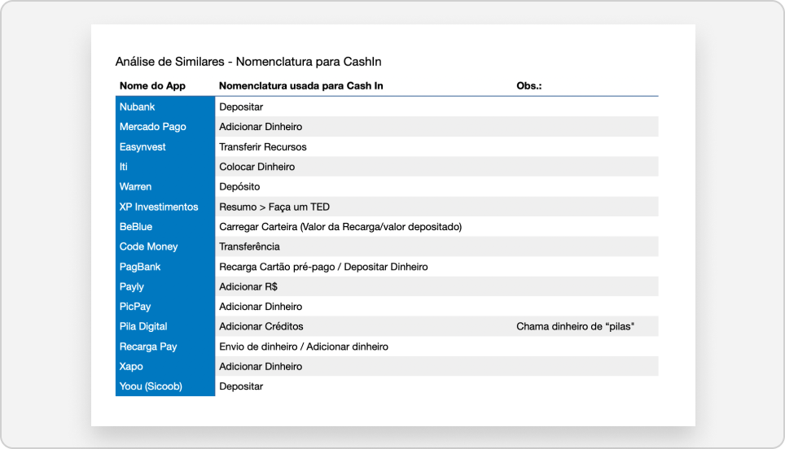
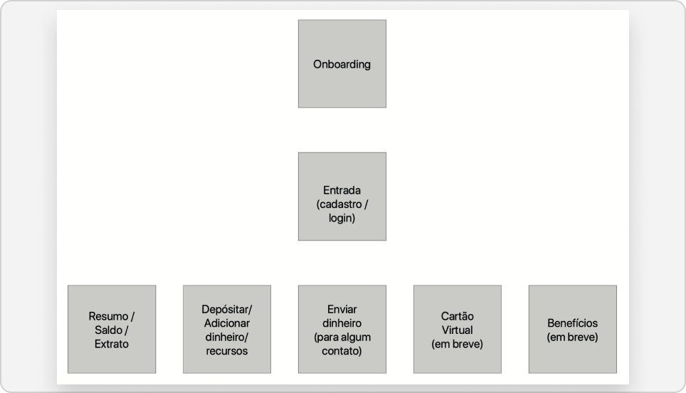
Mapeamento Estrutural e Conceitual
Mapeei os primeiros fluxos estruturais (então nomeados sob o conceito exploratório “Uóleti” em versões Alpha/Zero) para organizar a hierarquia visual de saldo, atalhos de “Pagar”, “Cobrar”, extrato e configurações da conta.Governança de Sessão e Prevenção de Erros
Estruturei a governança de saída da conta e tratamento de erros de navegação, equilibrando a proteção contra acessos indevidos e a clareza para o cliente.Consolidação de Perfis Estratégicos
Consolidei pesquisas de campo e entrevistas em personas estratégicas que sintetizavam os perfis prioritários da carteira.
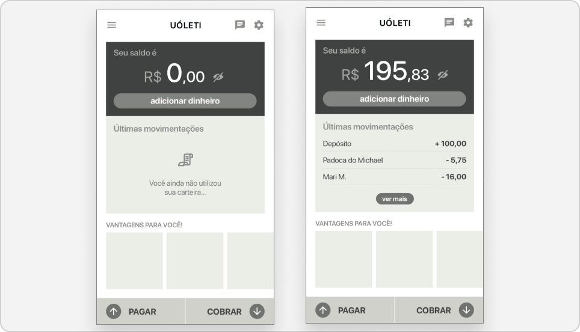
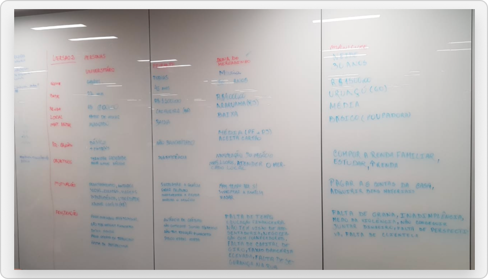
Gestão Visual e Empatia Ativa
Para evitar que os artefatos ficassem esquecidos em pastas digitais, imprimi e afixei as personas diretamente nas paredes da sala de trabalho da squad.Aculturação da Engenharia de Software
Essa gestão visual transformou o dia a dia da equipe técnica: os engenheiros passaram a consultar as dores e hábitos dos usuários durante as tomadas de decisão de código e arquitetura de sistemas, gerando forte reconhecimento e admiração pelo trabalho de design.
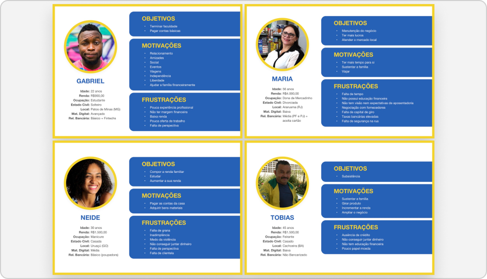
Facilitação de Workshops e Mapeamento de Jornadas Críticas
A base estrutural do aplicativo nasceu em dinâmicas de cocriação. Facilitei e participei ativamente de reuniões de fluxo com dezenas de stakeholders (Negócios, PO, Desenvolvimento e Segurança) para mapear a Arquitetura de Informação em quadros brancos (whiteboards) com post-its.Alinhamento do Onboarding e Credenciamento
Conduzi dinâmicas de mapeamento de fluxo com post-its para alinhar o “Caminho Feliz” e exceções de cadastro, validação de identidade por SMS e criação de senha numérica de 6 dígitos.
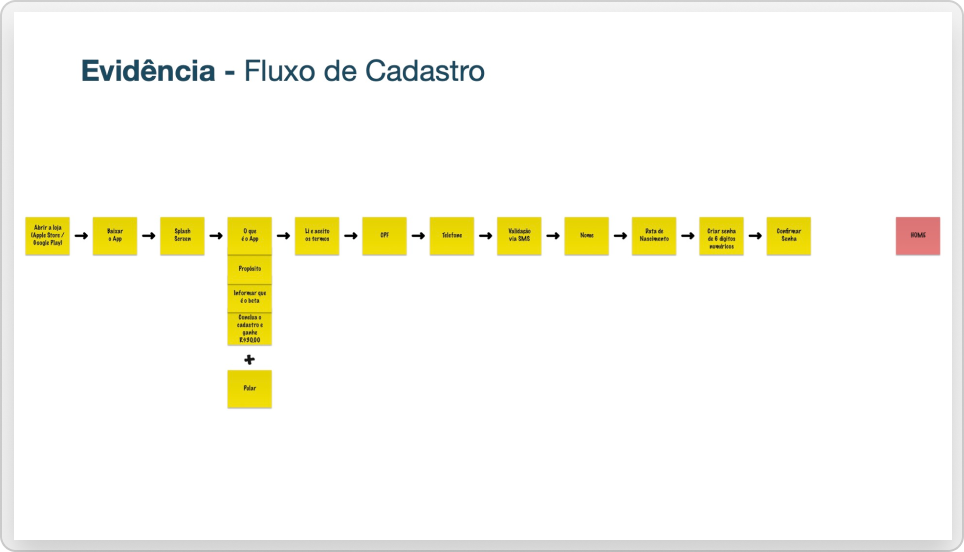
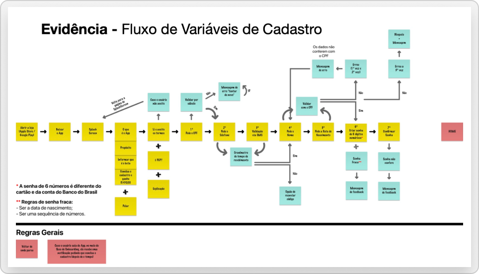
Equilíbrio entre Segurança e Experiência
Facilitei a definição de regras conjuntas entre Design e Segurança da Informação, viabilizando o modelo de “1 usuário por dispositivo” para resguardar o sigilo bancário sem prejudicar o retorno rápido no fluxo de login.Desenho dos Ciclos de Cash-In e Cash-Out
Projetei as jornadas completas de Cash-In (geração e cópia instantânea de dados de agência, conta e CPF para transferência) e Cash-Out. Para o pagamento de boletos e convênios, desenhei telas contemplando variáveis complexas: escaneamento via câmera, inserção manual de código, validação detalhada dos dados do sacado e autenticação por senha (PIN Pad), culminando no comprovante de transação bem-sucedida.
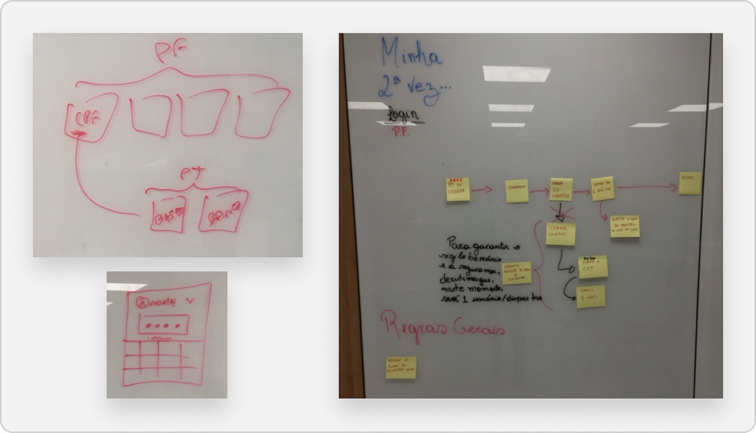
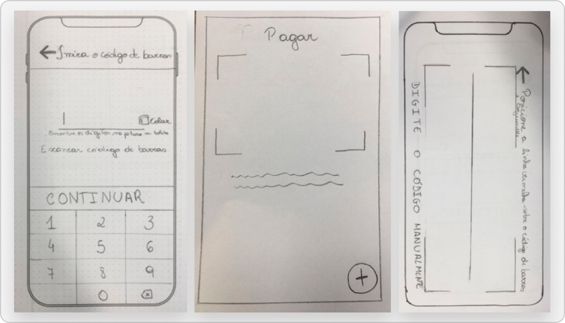
Evolução
Para testar e aprimorar a ergonomia das interações e botões de ação, criei wireframes navegáveis em baixa fidelidade.Mockups em Baixa Fidelidade
Para viabilizar o início dos testes de desenvolvimento, criei mockups do aplicativo em baixa fidelidade direcionados às lojas de apps.
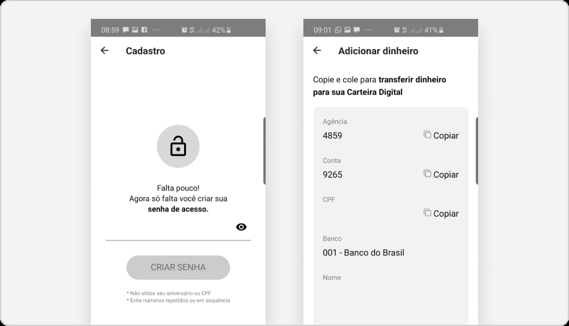
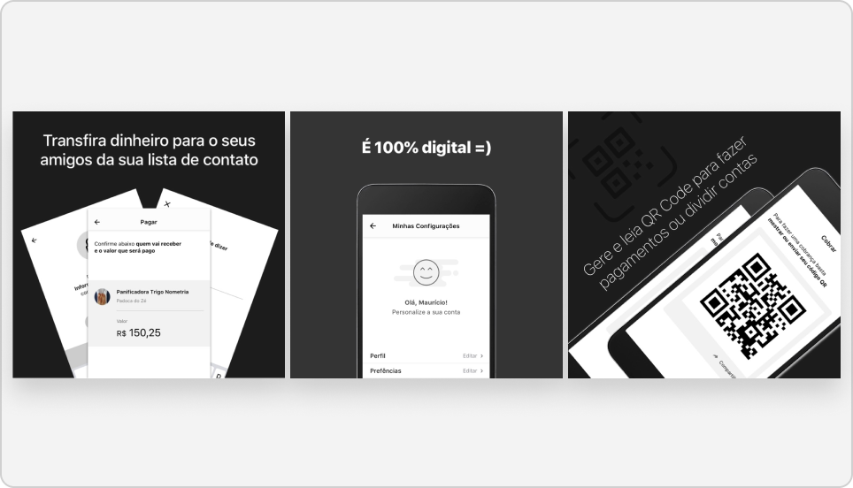
Refinamento de Interface
Com base na identidade visual vibrante definida para a marca (composta por amarelo, roxo e azul), avançamos no desenvolvimento das interfaces em alta fidelidade. Criamos um fluxo de onboarding amigável e envolvente, iniciado com a provocação “então, vamos começar?”, ao mesmo tempo em que validamos os feedbacks visuais das transações para assegurar a clareza necessária nas primeiras etapas de testes de usabilidade.
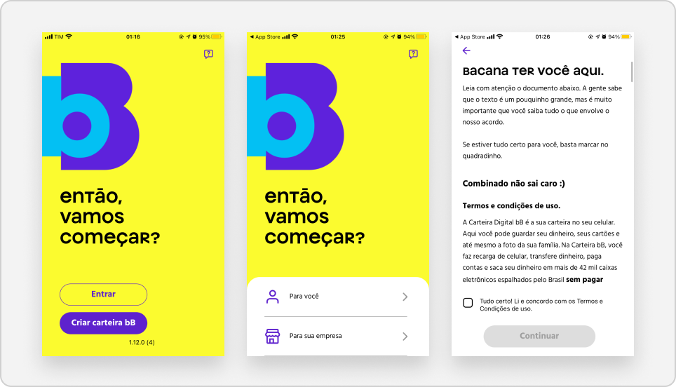
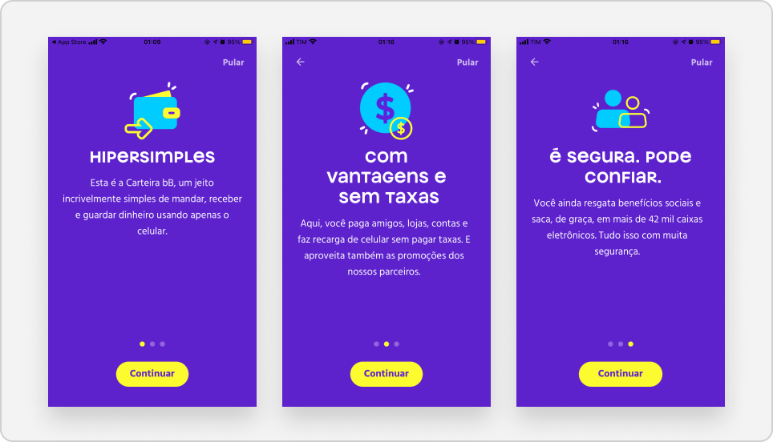
Validação Prática em Estabelecimentos Comerciais
Para avaliar o aplicativo na prática, levamos a versão Beta para o contexto real de pontos de venda, como comércios locais e docerias. Desenvolvemos displays físicos com QR Codes e frases engajadoras, a exemplo de “Esqueceu a carteira em casa? Pague pelo celular com a Carteira bB” e “Se não for deixar na pindura, pague pelo celular...”. Essa validação presencial com os participantes dos testes forneceu insights cruciais sobre o comportamento dos usuários e a usabilidade da leitura de QR Code na rotina de estabelecimentos movimentados.
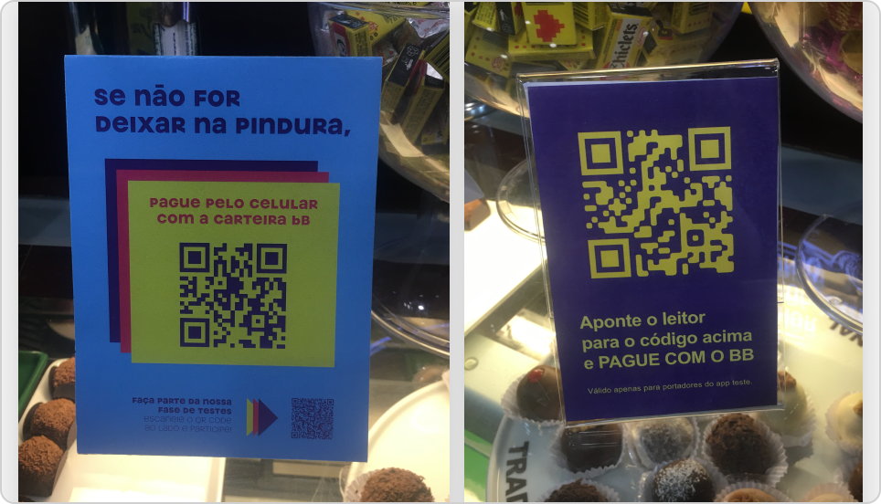
Resultados
Arquitetura Estrutural e Aprovação Multidisciplinar
Mapeamento, prototipagem e aprovação ágil dos fluxos críticos da carteira digital (Onboarding, Cadastro, Login, Cash-In e Pagamentos) em Discovery. As dinâmicas de cocriação uniram Tecnologia, Negócios e UX, gerando documentação e protótipos validados pelas diretorias antes do desenvolvimento.
Engenharia e Cultura Focadas no Usuário
A gestão visual das personas físicas no ambiente de trabalho eliminou silos operacionais, aproximando a engenharia das necessidades reais dos clientes e criando uma parceria empática e alinhada à proposta de valor do produto.
Aderência ao Cashless e Validação em Campo
Testes práticos com QR Code em comércios reais (como cafeterias e docerias) antecederam o lançamento oficial, sendo essenciais para avaliar a ergonomia do escaneamento, o tempo de resposta e a aceitação da experiência de pagamento 100% digital.
Mitigação de Riscos Técnicos e Conformidade
O mapeamento prévio de exceções, falhas e restrições bancárias (como 1 dispositivo por CPF) evitou refatorações no código e garantiu conformidade com normas de compliance e segurança.
Aprendizados
Discovery Multidisciplinar Acelera o TTM
A cocriação de wireframes conceituais diretamente no quadro branco com engenheiros e a Product Owner previne retrabalhos e agiliza validações. Essa sintonia inicial assegura que a entrega em alta fidelidade seja viável do ponto de vista técnico e perfeitamente alinhada às metas de negócio.
Artefatos Físicos na Gestão e Cultura
Expor personas e jornadas nas paredes é gestão visual e influência. Trazer as dores do usuário para o dia a dia da engenharia gera empatia nas decisões técnicas, aproxima negócios e consolida o respeito entre as áreas.
Segurança e Compliance Como Guias de Design
Em bancos tradicionais, restrições regulatórias como sigilo bancário e limite de um dispositivo por conta devem orientar o design. O papel do UX é converter exigências de segurança em etapas simples e transparentes que transmitam confiança ao usuário.
Testes em Campo no Phygital
Testar o QR Code no comércio real (cafeterias e docerias) revela atritos que testes remotos não antecipam. Iluminação, distância da câmera, pressa e rotina do caixa exigem respostas extremamente ágeis da interface.